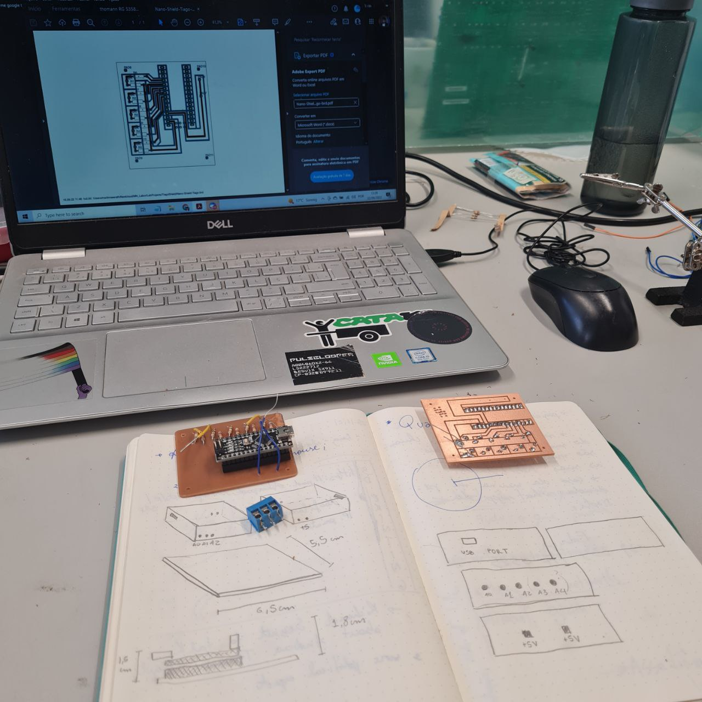

research
news

- Check out a page about my doctoral research at Ground Zero.
- Learn more about my fellowship with the Academy of Media Arts Cologne (KHM).
researcher's bio
I am a researcher at the intersection of art, science, and technology. Throughout my career, I have been a part of various research groups in different universities, exploring the cutting edge of our understanding in these fields. I believe theory and practice are inseparable, and find very exciting to challenge myself to create knowledge that defies the limits between different fields.
The first scholarship I've had was at Fluminense Federal University (UFF), in Rio de Janeiro, Brazil, where I was part of LabCULT. Nowadays, they define themselves this way: Created in 2006 and coordinated since then by professor Simone Pereira de Sá, LabCult is an effervescent center of ideas and projects around topics such as pop culture, peripheral music genres, musical activism of artists and fans, music videos and digital audiovisual culture, music circulation platforms, and performances of dissident bodies, among other researches currently under development.

This encouraged me to go further investigating the intersection of sound, art, culture and activism, which brought me to the Federal University of Juiz de Fora (UFJF) , where I participated in Lab Uso Tópico. We were a modest hacklab working with DIY electronics, programming and other open source-related practices. As for my research, at UFJF I wrote a Master's thesis related to transfeminism, musicology and decolonial studies.
After getting my Master's degree and working with the production of educational material, as well as typical artistic works, I decided to join the doctoral program at São Paulo State University (UNESP). A scholarship provided by the Brazilian Coordination for the Improvement of Higher Education Personnel (CAPES) made it possible for me to dedicate myself to two different research groups there, namely science/ART/technology (cAt) and International and Interinstitutional Group of Research between Art, Science and Technology (GIIP).
During my doctorate research, I also had the opportunity of joining the Academy of Media Arts Cologne (KHM) with a scholarship from the German Academic Exchange Service (DAAD), which lasted ten months between the years of 2020 and 2021. After that, I became a fellow researcher at the university for one year. At KHM I took part in Ground Zero, a research group focused on the Poetics of technics and cognition. With them I wrote texts, developed artworks and workshops.
Please check out this page again soon, it will be updated!